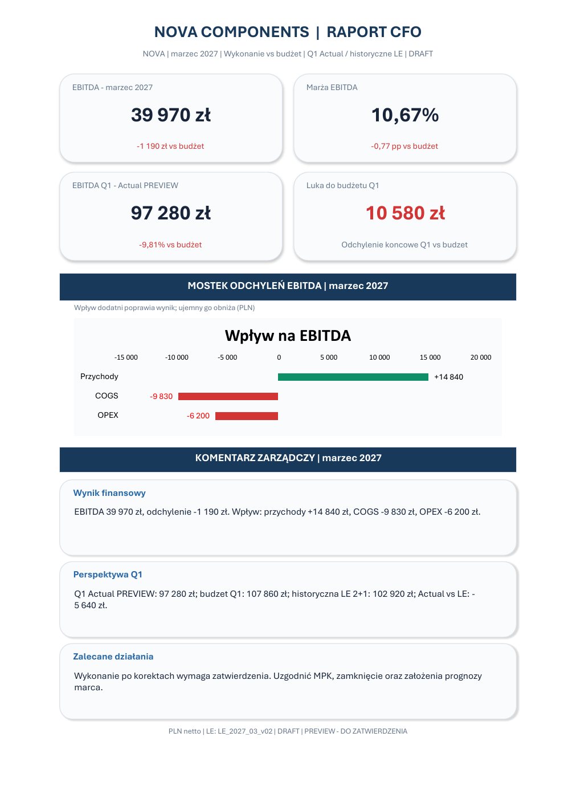
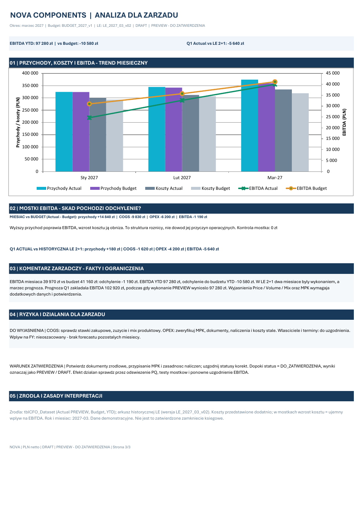

Wróć do projektów
05 / NOVA COMPONENTS
Raport CFO dla NOVA Components.
Miesięczny obraz finansów łączy wykonanie z budżetem i historyczną prognozą Q1. Mostki EBITDA, dane narastająco i komentarz dla zarządu pomagają zlokalizować odchylenia i wskazać obszary do wyjaśnienia.
EBITDA — marzec 202739 970 zł1 190 zł poniżej budżetu
EBITDA narastająco — Q197 280 zł10 580 zł poniżej budżetu
Q1 Actual vs historyczna LE 2+1−5 640 złOdchylenie EBITDA
Raport opiera się na danych demonstracyjnych. Wyniki mają status DRAFT / PREVIEW — do zatwierdzenia; nie stanowią zatwierdzonego zamknięcia księgowego. Przyczyny odchyleń wymagają weryfikacji danych źródłowych, MPK i naliczeń.
Otwórz źródłowy raport PDF01 / RAPORT W TRZECH UJĘCIACH
Wynik, szczegóły i wnioski.
Grafiki przygotowane na podstawie
trzech stron raportu źródłowego.




